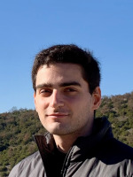

I am currently a PhD Student at Queen Mary University of London and a Research Assistant at the Information Technologies Institute (ITI), Centre for Research and Technology Hellas (CERTH).
I graduated with a Diploma in Electrical and Computer Engineering from the Aristotle University of Thessaloniki. My research focuses on Video Understanding with Multimodal LLMs.
Email: agoulas at iti dot gr

For an up-to-date list of publications, visit my Google Scholar profile.